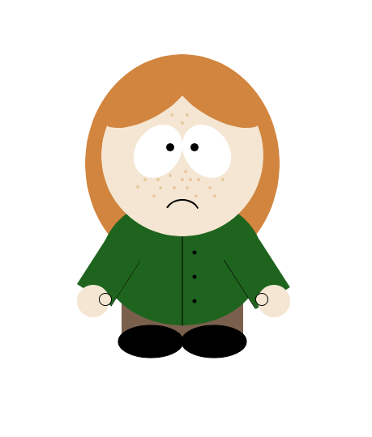

Selfie
Foundations of programming
For this project, the goal was to create a unique selfie using JavaScript. I really like the artstyle of southpark so I wanted to take inspiration from that. The first thing I did was looking at diffrent characters form the show and pointed out features that were common in most of the characters.This project was a great opportunity to explore dynamic styling and visual creativity with code.
